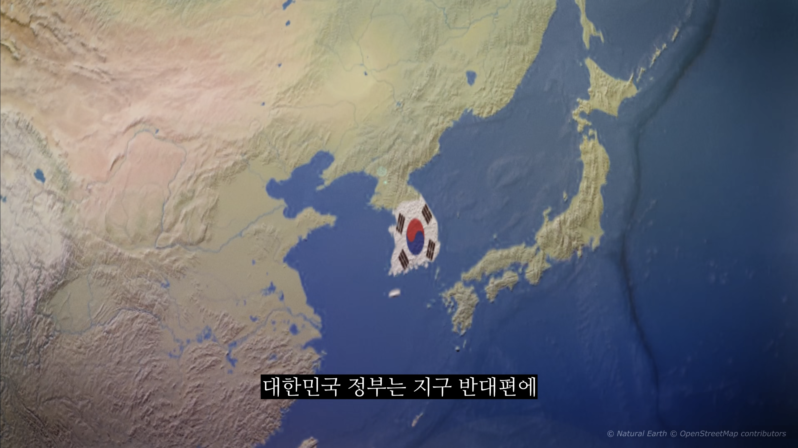
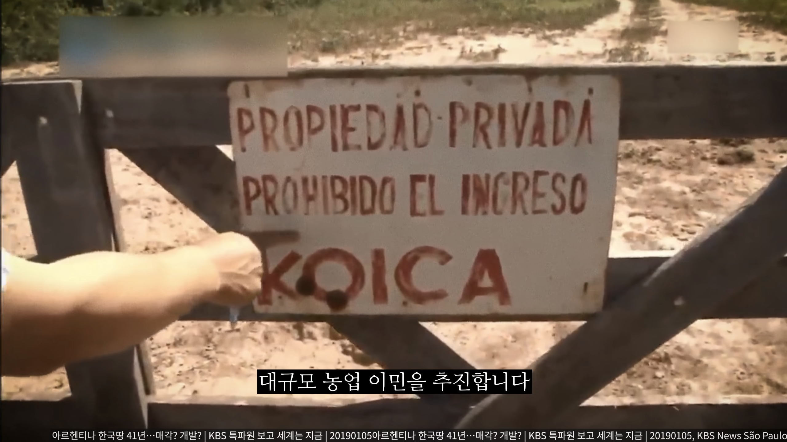
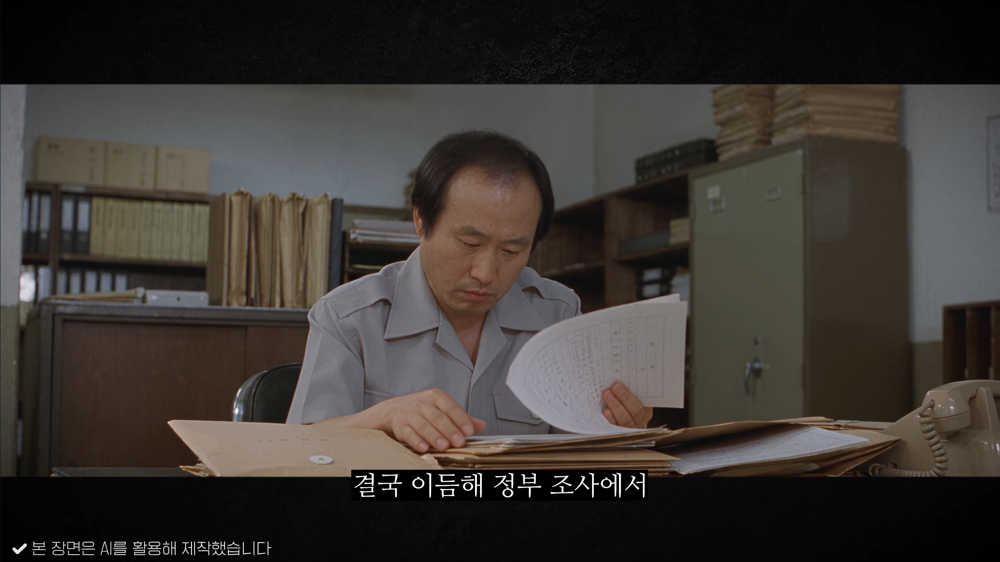
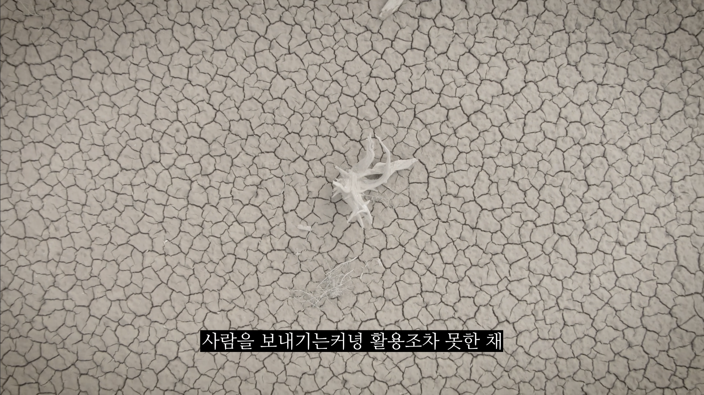
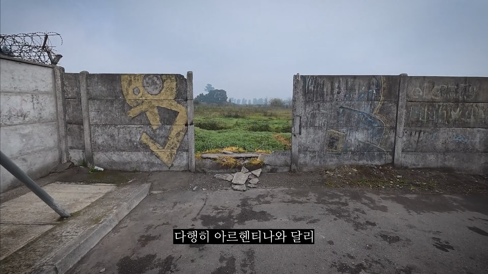
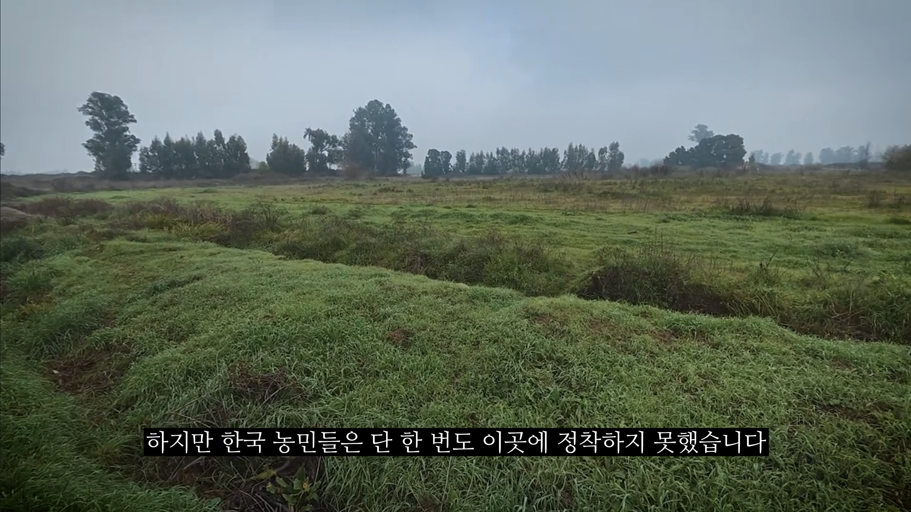

(출처 : 서재로36)
아무도 정착안해서 그렇지
전쟁나고 패배하면 언젠간 쓰일지도?
최후의보루를 그냥 탈조선멀티세울줄이야






(출처 : 서재로36)
아무도 정착안해서 그렇지
전쟁나고 패배하면 언젠간 쓰일지도?
최후의보루를 그냥 탈조선멀티세울줄이야
그러게 한국정부가 산 땅이면 한국정부 소멸하고 소유권도 소멸해서 국고 귀속아닌가
섬멀티 국룰이지
원래 정부가 사려던 건 저 땅이 아니었음. 원래 서울대 농대 교수들이 답사해서 브라질 쪽에 농사에 적합한 땅을 구매해놓으려 했는데, 외부 세력이 끼어들어서 "아니 여기다 사면 1/10 가격인데 왜 이걸 삼?" 이런 식으로 태클이 들어와서 저 땅을 사게 된 거임.
서울면적 1/3이면 국가차원에서 그렇게 큰 땅도 아닌데..
긍정적으로 생각해. 패배 집단이주해야 될 상황이면 이미 대부분 뒤지고 잡혀갔을테니 땅이 좁은건 괜찮을거야
저기는 빈땅이고 아무도 안살어?
조사도 안하고 산거임?
아무튼 거기는 불법 이주자들이 살고 있더라
약탈당할듯 땅만 있고 뭣도 없는데 가만놔둘까
땅을 샀음 -> 대한민국 멸망 예측 -> 비행기 타고 감 -> 비자를 못 받음(공항 억류) -> 터미널 영화 찍음.
왜 사놓고 안쓴대?
내가 이해가 안가는데.
내가 미국 부동산을 사, 그러면 미국 세법에 따라 세금을 낼거고, 법도 미국법을 따를거아녀
칠레건 아르르헨티나건 사진꼬라지 보니까 개 똥땅이잖냐
저기가면 인프라가 저절로 솟아나고, 상업활동이 저절로 가능하냐?
뭔 소리하는거야? 좀 알아먹게 말을 하지?
나라가 개 좆되면 그냥 난민이지 시바.